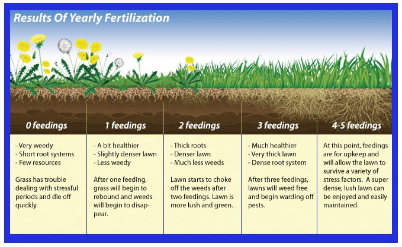

Welcome to Maungaraki Lime
Transform Your Soil Health
Discover how proper lime application can revolutionize your soil's health and productivity. Our interactive visualization shows you the complete transformation process from poor, acidic soil to thriving, nutrient-rich earth.
Why Soil pH Matters
Soil pH is crucial for plant health. Most crops thrive in slightly acidic to neutral soil (pH 6.0-7.0). When soil becomes too acidic, plants can't absorb nutrients properly, leading to poor growth and reduced yields.
The Solution: Agricultural Lime
Agricultural lime raises soil pH, making nutrients more available to plants. This simple treatment can dramatically improve crop yields and soil structure over time.
Ready to see the transformation?